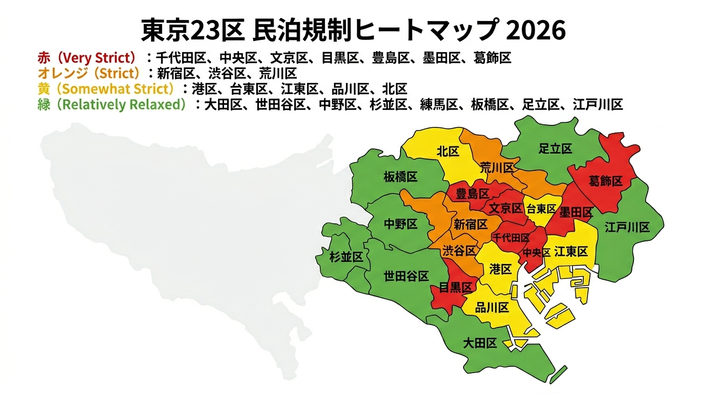

2026年6月
東京の民泊規制が厳しくなったから、民泊ビジネスは終わったのか？【2026年】
「東京の民泊はもう儲からない」
最近、こんな声を耳にする機会が増えました。東京23区では民泊に対する独自条例（上乗せ条例）が次々と強化され、営業日数の制限や家主不在型民泊への規制が厳しくなっています。特に2026年には、これまで比較的規制が緩かったエリアでも新たな制限が導入され、民泊事業者にとって大きな転換点となりました。
では、本当に東京の民泊市場は終わったのでしょうか。
結論から言えば、**「誰でも簡単に儲かる民泊」は終わったが、適正に運営できる事業者にとってはむしろチャンスが増えている**というのが実態です。
なぜ東京の民泊規制は厳しくなったのか
背景には3つの大きな要因があります。
1. インバウンド回復によるオーバーツーリズム
コロナ禍以降、訪日外国人観光客は急速に回復しました。その結果、ゴミ出しルール違反、深夜の騒音、スーツケースによる生活道路の混雑、マンション内の不特定多数の出入りなどが増加し、住民からの苦情が急増しています。
2. 行政による取り締まり強化
以前は届出だけで比較的簡単に運営できました。しかし現在は、違法民泊の摘発、立入検査、営業停止命令、住民通報への迅速な対応など、行政の監視体制が大幅に強化されています。
3. ホテル業界とのバランス
ホテルや旅館は消防設備や客室管理など厳格な基準を満たしています。それに対し民泊が比較的緩い規制で営業できることへの不公平感から、行政は地域の住環境と観光業界のバランスを考慮し規制を強化しています。
東京23区 民泊規制マップ（2026年版）
区ごとの規制の厳しさは大きく異なります。以下の4段階でエリアを分類しました。画像は準備中です。

非常に厳しい
厳しい
やや厳しい
比較的緩い
Aランク（非常に厳しい）
荒川区・中央区・千代田区・目黒区・文京区・豊島区・墨田区・葛飾区
週末営業限定や120日制限など、事業収益に大きく影響する条例が存在します。
Bランク（厳しい）
新宿区・渋谷区
住居専用地域では平日営業禁止などの制限があります。
Cランク（やや厳しい）
港区・台東区・江東区・品川区・北区
エリアによる制限はあるものの、商業地域では比較的運営しやすいケースが多いです。
Dランク（比較的緩い）
大田区・世田谷区・練馬区・板橋区・足立区・江戸川区・中野区・杉並区
住宅宿泊事業法の180日制限以外の影響が比較的小さいエリアです。
「民泊は終わった」と言われる3つの理由
理由1：180日営業では採算が合わない
住宅宿泊事業法（民泊新法）では年間180日までしか営業できません。さらに自治体の条例により営業可能日数が制限されるケースもあります。そのため、高額な家賃やローンのある物件では利益を出すのが難しくなっています。
理由2：運営コストが上昇している
近年は、人件費、光熱費、清掃費、アメニティ費用、管理費が上昇しています。以前のような「ほったらかし運営」では利益を残せなくなっています。
理由3：ホテルとの価格競争が激化
旅行者から見ても、「清潔なホテルの方が便利」と感じるケースが増えています。実際、海外旅行者の間でもチェックインの手間やセキュリティ、サービス品質を考慮するとホテルを選ぶという傾向が強まっています。
それでも民泊が終わっていない理由
ここが最も重要なポイントです。
市場がクリーンアップされている
規制強化により、違法運営、ほったらかし運営、低品質なサービスが市場から排除され始めています。これは適正に運営している事業者にとってはプラスです。
インバウンド需要は依然として強い
日本は世界的な人気観光地であり、東京、大阪、京都、北海道では宿泊需要が旺盛な状態が続いています。特に家族旅行やグループ旅行では、ホテルより民泊を好む利用者も少なくありません。
差別化された民泊は評価される
現在の市場では、デザイン性、ロケーション、レビュー評価、インバウンド対応が重要です。単なる「寝るだけの民泊」ではなく、「選ばれる宿」を目指す事業者が生き残っています。
生き残る民泊事業者への提言
1. 旅館業許可を取得する
365日営業が可能になり、収益性が大きく向上します。
2. 地域住民との関係構築を重視する
ゴミ管理や騒音対策を徹底し、近隣とのトラブルを未然に防ぐことが重要です。
3. 差別化戦略を採用する
価格競争ではなく、デザイン性、清掃品質、おもてなし品質で勝負する施設が選ばれています。
4. 複数エリアへの分散戦略を取る
東京一極集中から、地方観光地、リゾートエリア、温泉地へ分散展開する事業者が増えています。
まとめ：東京の民泊は終わったのか？
答えは「NO」です。
確かに、手軽な副業民泊、規制を無視した違法運営、準備不足の収益目的民泊は淘汰されつつあります。しかしその一方で、適切な許可取得、差別化された運営、地域との協調、インバウンド需要への対応ができる事業者にとっては、競争が減りむしろチャンスが拡大しています。
東京の民泊市場は「終わった」のではありません。
- **「誰でも参加できる市場から、プロフェッショナルが選ばれる市場へ進化した。」**
これが現在の東京民泊市場の本質です。